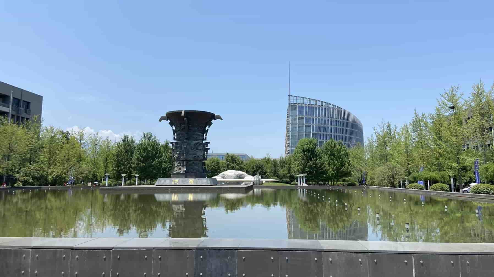

面向何尊，隐姓埋名，为国铸剑
如果用一个词语来形容我的第一站，我想给西安之旅画上“悲伤”的句号，但我真心地感谢我的朋友、我的同学、西工大的志愿者和老师以及一路上默默付出的人。
西北工业大学夏令营是七月二日到三日举行，一共两天时间，不过学校要求一号下午就要带着材料报道，活动地点是在西安长安校区，安排营员住宿是在秦岭山麓的一个名为秦龙温泉酒店。实话说，远离尘嚣，山沟沟里的大农村环境清净优美，西工大很多重要技术都和军工国防有关，所以校区在大山深处意味着我必然会失去一些东西。
夜幕下寂静的山村主干道
西工大的计算机很看重学校背景，对 211 类院校并不友好，而对 985 院校的学生是“报名就能入营”，相对容易很多。招生办对报名系统中的学生进行一轮筛选，最后我获得了入营资格。但今年西工大有一个额外要求，学生必须提前联系导师，导师确认接受学生，与学生达成双向选择，招生办才会同意学生正式入营。所以，在 6 月 20 号，我通过邮件交代我的个人情况，申请方向，附件添上简历，发送给西工大计算机视觉、机器学习领域的王老师。当晚，我收到王老师的回复，她同意接受我，并将意向导师选她，不过回复得相当敷衍。
我在西工大 QQ 群的招生办表单上填上导师名字，然后就开始考虑前往西安的车程。
我的同学杜，他是大数据工科专业，在他专业排名 4/68，通过四六级考试，有校级奖学金和标兵若干，有数学建模和蓝桥杯等比赛省级奖项（似乎没国奖的比赛），项目经历是一些课程设计，还有个 NEUmail 是和我的团队一起合作，社会实践志愿很多，据他说累计时长 223 小时。我之所以简单介绍一下杜同学，是因为想给读者更多的参考，后面我与他的交集会慢慢陈述。
第二天 21 号，他问我联系了老师没，他没联系上。一番交谈后，他换了一个联系导师，是大导，不过大导给杜推荐课题组下的另一个小导，我也发邮件给我的王老师，索要她的微信或电话联系方式。杜让我等他，我们一同前往西安。
22 号我又一次发送邮件，索要王老师的联系方式，但始终得不到回音，我有点忐忑。当天下午 14:35 杜和我说，小导师安排晚上 9:40-9:45 的面试，要求三分钟介绍自己亮点，并给予说服西工大给杜 offer 的理由，剩下两分钟是学生向老师提问交流。他没提前准备这方面的工作，所以我把我的个人简述幻灯片发给他参考。
由于 26 日零点，招生办要关闭填报意向导师表单，杜的导师依然没有答复，所以 25 日下午他让我自己买西安的车票。我答应了他，但实际上我没买，我想再等等他。
有时候变化是真得快。25 日当晚快截止的时候，他的导师同意了他。
卡截止日期买车票
27 日，我得知他们大数据专业的另两位同学，左，排名 5/68，张，排名 6/68，都成功获得西工大计算机院正式营员资格。但遗憾于纯数学专业的林，排名 1/23，申请西工大和大连理工大学的数学系夏令营失败，后面北京师范大学、山东大学和深圳大学的数学都成功入营。
29 日下午，我接到中科大人工智能方向老师电话，他有三个名额，给我留一个，给我 offer，希望我能来。后面我加了他博后微信，与博后愉快地交流了一下比赛以及我需要提前做些准备。与此同时，我的朋友丘（女生，管理学院）突然问我“终将逃不过痛苦地死去，是不是应该做自己更愿意做的事情，快乐一点”，我咋以为她申请浙江大学直博失败了，安慰她还有别的夏令营，结果只是字面意思，她家人今天逝世，我陪她聊了很久，她决定回家。我宿舍人走光了，晚上，宿舍最后一位舍友许（和我计算数学同专业，出国，目标哥伦比亚大学）邀请我和杜吃饭，我们三吃了学期最后一顿东北菜，干锅鸡翅+日本红烧豆腐，永远的经典。
30 日上午，我和杜出发。中午在天津中转，有意思的是，我们的午饭是潼关肉夹馍，不仅物价贵，而且和后来在西安吃的正宗肉夹馍比起来，味道也差点意思。我俩是相邻的火车上铺，他 21:00 左右就入睡了，杜累了。我迟迟未眠，大约是第二天凌晨两点入了梦。
2024-06-30 23:05 火车路过曾经白月光的家门口
七月一号早上，我们到达西安站，早餐是肉夹馍+豆浆，饭后我立刻邮件联系我的王老师，告诉她人已抵达西安，询问接下来工作，落款处再次要老师的微信联系方式，但依然没有回音。我越发觉得不安。
从西安市中心，乘坐 40 分钟的地铁，然后再乘换一个半小时的公交车，我和杜深入秦岭山村。西工大把我们安排在学校附近的秦龙温泉酒店，酒店里最近的村子大约一里路，酒店附近只有唯数寥寥的三家饭店，确实过于荒僻。下午在酒店报道，我和杜遇见了左，以及杜的舍友徐，本科计算机学院，申请西工大软件工程，排名 11/197。
村里的老人应该都睡着了吧，虽然才刚九点
西工大给每位营员提供免费的住宿，并补充早餐十元、午晚餐二十元的伙食费，我和杜住一个标间，徐单独住标间，左和一位郑州大学的龚同学住。天下真大，圈子真小。这位龚是纯数学方向林的好朋友。
杜很累，差不多整个下午他都在睡觉，直到傍晚，我喊醒他晚上有中科大机试考核。为了不打扰他，我和徐散步，前往西工大提前参观。我俩沿着村里的河岸走，穿过田间土路，最后走在大道，抵达。西工大的建筑都很庄严高耸，我和徐边聊边赏，直到走累了，在校园里的蜜雪冰城点杯饮料，歇了会。菠萝果茶七分糖有点齁，徐的糯香果茶味道难以下咽，我们调侃着以后避坑饮品系列，同时，也等待着已经考完试的杜前往赶来。
中科大机考只有一道题，三十分钟，问题是实现计算器，不允许使用 eval() 函数，参考思想是数据结构的中缀表达式。杜只通过了已知的三个样例，但设计的代码架构有问题，所以从原则上说，后面所有样例都是错误的，即不通过。
我和左、徐安慰杜，四个人就地坐在西工大大门口校园公交车的马路牙子上。出入的学生人来人往，我们四个穿着西工大发的红色营员衣服显得格格不入。我们说着笑着，橙黄色的灯光照着。一个黑人兄弟进入校园，看着我们四个，我看着他，笑着，他也笑了，走了不远又回头对我笑着。
大概快十点，左提议大家都回酒店休息，于是我们在长安街上买了各自的晚饭，我的寿司，徐的炸鸡块，杜的竹筒糕，左的我记不得了。
七月二号，校大巴车接送到学校，西工大举行开幕仪式，全体营员（包括其他所有学院营员）在翱翔体育馆就坐，场面很是热闹，有校长、领导、营员代表发言、授旗、介绍，很隆重。
西北工业大学夏令营开幕式授旗
我们的营员纪念品是一个写字笔和本子，午饭拿着二十元的饭票点了猪肘，有一瞬间以为回到计划经济时代。
纪念品
午饭后，左提议骑校内共享电动车逛学校，于是我和杜扫了车，一共骑了 70 多分钟，共花费六元左右，途中遇到独自行走前往数字化大厦的徐，便拉徐入伙，四个人骑着车环绕西工大，更重要的是天气特别好。这是我随便拍的几张图片。
何尊

突然联想到欧冶子
图书馆

飞机

秦岭

一起骑车

橙色的猫猫晒太阳
下午两点钟是计算机学院的招生宣讲，徐的软件工程学院也有，我们四人差不多逛完学校后，去指定报告厅落座，我、杜、左还有在洗手间遇到的龚，四个人并排坐在报告厅中间，徐去了软件院要求的另一个数字化大楼。
计算机院一共四个系，主持人先总括整个院的情况，基本和军工国防密切联系，但是我困意太大，伏在桌子上睡着了。直到教室里的扬声器发出“喂喂，我在说话，我在说话”，我才惊醒，讲台上是组织我们夏令营的助理，一位年轻漂亮，身材高挑的美女在帮一系主任调试麦克风。
一系偏重计算机硬件，尤其是中央处理器并行运算架构设计，以及国产操作系统指令集框架研究。二系是天海地一体的无人机研究，三系是人工智能、计算机视觉、自然语言处理等算法研究，四系是情感识别、多模态等。我的回忆有可能不准确，有些系的方向交叉，这里读者自行细究。
大约一个半小时，汇报结束，听说徐的软件工程学院一直宣讲到晚上七点，我们几人全回酒店了，他才结束。主持人让四个系老师分别站开，再让营员与自己联系的导师课题组站队，系主任们稍后会带领不同队伍参观相应课题组，并在明天三号所有课题组进行面试考核。
我意识到命运齿轮向着害怕的一面转动，此刻之际。
四个系的宣讲中，我在任何一页幻灯片都没看见我王老师的名字，我立刻再次发送邮件给我的意向导师，询问她的考核流程、地点、联系方式，我很清楚，她依然没回。杜的老师是三系的，我跟三系站了队，已经对优秀营员不抱希望，所以我释然了。我们参观三系实验室、会议厅，观赏课题组招生的黄河无人机勘测宣传片，结束后我向三系老师不断打听我的王老师，又向 QQ 群的管理员询问，但均未遂。
差不多快到下午五点半，我在三系大楼门口，遇到一位夏令营组织的助理，非常感谢，她提供我的导师电话，救我于水火，而且她告诉我王老师是三系的，那一瞬间我不知道说什么是好。或许我的导师就职新任的？还是她不同于四个系的课题组独立的？总之，我找到她了。
王老师似乎不了解夏令营考核这么一回事
她让我明天上午十点去指定的办公室找她，我意识到这是单独面试，与杜、徐、左、龚，还有前文提到的张（女生），他们的多老师小组面试形式不同。
杜、左、龚的老师要求准备个人介绍三分钟，幻灯片陈述五分钟，剩下大约七分钟时间进行提问考核，不需要准备英文。杜、龚是三系，左是一系，徐申请的是软件工程，不了解，张申请的是计算机三系，但也不了解。而然事实上，七月三号他们的面试临时要求英文自我介绍一分钟。所以杜、龚、左非常尴尬，据说整个三系绝大多数营员英文介绍都没准备。
三号早上，我们分批次乘坐校园大巴车从酒店到了学校，雨下得大，在校园里的打印店彩印了三份简历，虽然我猜测是单独面试，但多印几份总不会错，杜印了五份。由于没带行李箱，我只穿着一双白网鞋，鞋子被积水弄潮湿，鞋子尖全是泥水和脏，西安未来一周全是雨，鞋子也干不了，心情和天气一样阴郁。
我是上午十点钟面试，我们几人中最早的，整点时刻我敲门进入王老师办公室。的确，这是单独面试，只有她一个人，她在打电话，点头示意让我先坐下来。王老师扎着马尾辫，外面一件敞开的白衬衫，里面是黑色的连衣裙，裙子 V 形领口开着三个扣子，大概三十岁出头，既有女人的知性气质也散发着丰满性感。房间一共四张桌子，她的位置靠门，电脑在工作着，左手边的桌子干净且空，后面两张并排的桌子积灰，桌上是孩子们的绿巨人浩克和乐高挖土机玩具，房间最后面一个巨大的摄影幕布，更是灰尘遍布。
她接完电话，微笑亲切地问我名字，但接下来的交流，印证着墨菲定律。我将重点按照顺序列举出来，以便读者参考。
- 1. 她没让我自我介绍，直接开门见山，问我报了多少个夏令营。
- 我原本是想撒谎，说只有西工大和本校，但她眼神很诚恳，盯着我，让我实话实说，“20 个整”我果断回答。她惊了一下，说“你这么海啊”。我告诉老师，与身边人对比，我勉强是平均水平以下，根本不多，况且已经被拒了 14 所了，只入了西工大和本校（这里我并没有告诉老师西安交通大学和中国科学技术大学情况），如果我不多投夏令营，甚至一点机会都没有，所以我不海，怎么能说我海呢。
- 2. 她问我本校和西工大，我会如何选择。
- 西工大比我本科学校确实更强，实力一流，所以我就坦诚告诉她。
- 3. 她再一次开门见山，“我不能给你优营”。
- 当她说出这句话，我其实已经做好心理准备，早就不抱有希望，只是没想到才刚面试开始，就给我结论，我愣了一下，因为按照正常套路，怎么也是经过一系列考察交流，才拒绝我，没想到直接摊牌。毕竟当初我邮件问她，能不能填写她为意向导师，是她同意，既然同意了，我才来西工大找她，结果还没开始就结束了，她要早说，我肯定会联系别的老师了，所以当时我很失望。
- 我怀疑她可能已经提前承诺过别的学生优营，所以拒绝我，至少后面旁敲侧击，得知她只招收一个硕士。
- 她解释道，现在给优营为时太早，未来变数很大，如果真心想报她，来西工大，预推免才给 offer。虽然她说的确实是真心话，但就这样结束了过于草率，上不得台面。西工大计算机院宣讲的时候信誓旦旦说通过一系列考核，优秀者获优营，效力是铁定的，良好者预推免优先考虑，效力是含糊其辞的，合格者可参加预推免，效力是不好评价的。随后，我问老师有没有什么想问的。她思考一会，然后对着我的简历提问，问得很多也很细，我一一作答，想给她上得了台面的决定，好歹可以说因为我回答得不够好才把我拒绝掉，一共提问了差不多 35 分钟。
- 4. 为什么选择西工大计算机？
- 5. 你计算机编程能力怎么样？代码量多大？
- 6. 你了解我做的方向吗？那你说说人工智能和机器学习之间的关系。
- 7. 你这有一段科研经历是关于 Siamese-Network 的，你讲讲这个孪生神经网络的整个算法流程。
- 8. 孪生网络用的是什么度量函数？
- 9. 你对度量函数与损失函数的理解。
- 10. 孪生网络训练的数据集维度，规模样貌？
- 11. 虫子图像做标记的时候为什么用 LabelImg，它的 YOLO 和 XML 格式是怎么回事。
- 12. 你还有一个科研是 TFT 模型，说说模型英文全称是什么？大致原理怎么回事？
- 13. 为什么选择 Temporary Fusion Transformer 模型？你认为最后训练效果不好的原因是什么？
- 14. 你还有一个一区文章，介绍一下文章？什么是杠杆操纵？
- 15. 你统计学用的是什么方法？为什么用这种回归和检验方法？
- 16. 你是怎么处理这个 csv 数据集异常值的？Winsorize 缩尾处理怎么操作的？
- 17. 你数据结构算法学了哪些？那你们数学系的算法讲的是什么？
- 18. 你还有个 GitHub 300 多颗星的项目，介绍一下你的项目。
- 19. 你用的 flask 框架是怎么工作的？
- ......
王老师和我聊得很好，我喜欢她，能坦诚相见的交流。她问了很多问题，我应该是回答出来了，她好像挺满意，除了其中第 9 条度量函数与损失函数，我脑袋发热，说是一种东西，她哈哈笑着给我细致解释。还有一个对 Temporary 的翻译，我理解为“临时”，她给我阐明。因为不能获得优营，后面我也直接放开问，问放不放实习，会不会 push 学生，读博转学校受限制有哪些。很感谢她，跟我说了相当重要的一点，我之所以很多夏令营被拒，是因为计算数学转计算机领域被卡。
我看着她，她看着我，应该没什么好聊了。临走前，她把彩印简历递给我，我推回去说，“老师你留一份”，她又还给我说，“我电脑有你电子简历”，我再一次推回去说，“为时太早，未来变数很大，你留着吧”。她笑着收下了，因为这是我踏入门后她直接拒绝我的话。我踏出门，奔向左和杜的方向，内心很平静。我讨厌她，吊着我，把我养在鱼塘。
左和龚也是上午面试，但比我晚一点。左是一系，三个面试老师拷打二十多分钟，问的全是计算机 408 知识，左不会，全程道歉，当然没有凡尔赛，他确实不知道，而且英语基本说不出来，左认为自己拿不到优营了。龚是三系，面试差不多一刻钟，英语个人介绍也说不出来，问的全是项目，尤其是他做的 Android 项目中一个有线和无线的问题，不过龚道歉得没有左那么严重，情况乐观些，我们几个人都认为龚有希望优营。
杜是下午面试的第一位，他课题组要求按照姓氏首字母排的。门口很多红衣营员，但大约只有五分钟，他就从面试厅出来了。他的导师说当时 6 月 22 日晚上 9:40-9:45 的面试已经了解过了，所以直接就让他先出来等通知。杜做了英文自我介绍，当然也没提前准备，但磕磕碰碰还是说完，然后介绍个人幻灯片，两位他不认识的面试官不做声，全程他的意向导师和他交流。结束后我们几人坐在一块猜测杜面试的意思，搞不清楚是乐观的还是悲观的，他自己也混沌。杜结束后，我们哪都没去，龚因为别的夏令营先走了，我和左坐在杜旁边，等待黄昏。
夜幕降临，下午雨已经停了，晚上地面也干了，远边的天空乌黑的。左提议吃自助，我说吃铁锅炖，三人在长安街上转来转去，最后还是选择自助。自助打折后 68 元一人，但我要下载并注册抖音，就吃个饭而已，简直离谱，好在左摸索半天他发现可以一个人买三个人的单，我才卸载了抖音。鸳鸯锅底额外加 10 元，餐巾纸两元一包。这家自助肉质没色泽，蛋挞也硬邦邦的，冰柜一开，一股冰激凌馊了的味道涌出。左、杜就像我和徐调侃饮料一样骂骂咧咧，我们很快乐，吃完晚饭，步行回酒店。
山里的街道空空荡荡，树影婆娑，风影摇曳。我说西工大是我第一梯队，如果没有更好的方向，其实我是能接受来这的，左说他绝对不会来着，北航点击就送，他想去那，杜有点犹豫，他其实很喜欢课题组，导师也厉害，也喜欢西工大，唯一不平衡的就是地域太糟糕。过了村的桥，快到酒店，只有一盏明亮的路灯驱除黑暗，黄色的灯光，我们三的影子连在一块。
七月四号上午，杜正在玩植物大战僵尸杂交版的时候，他的导师打来电话，意思是如果确定来，就给他打高分获得优营资格，如果不确定，他先给他良好，他只有一周的时间考虑。我跟杜说，明天上午这个点回电，想清楚。但实际后来，他打算后天上午再致电，结果西工大很快就公布成绩，导致他被打分良好。
正午天空晴朗，我、杜、左退了房，坐着公交车，又换乘地铁，到了下午两点，在西工大友谊校区吃了午饭，老板和老板娘都友好，我是冰封+肉夹馍+凉皮，特别好吃又量多实惠，他们俩都点了汤面，喜欢吃麻辣。午饭后，我们聊了片刻，左和杜都去咸阳机场，一个去深圳，一个去沈阳，我放弃了吉利大学人工智能计算机技术，因为即便是预推免，我也不可能申请吉大，所以没必要占着名额。我哪儿也去不了，因为我暂时没夏令营了，我想回合肥，有点想家，但也害怕，他们后面都有好几个夏令营，但我没了，我有点后悔婉拒西安交通大学计算机系的老师，现在的形势对我不利。
午饭的店正对着西工大创新大厦
我们三对着创新大厦，杜晚上七点的飞机去沈阳，后面是中南大学大数据，再后面是吉林大学大数据，然后是国防科技大学大数据，左晚上延航到十一点的飞机去深圳，然后是北京航空航天大学航天工程，接着西安交通大学软件工程。路旁和我们一样年轻的三人，骑车共享单车，停着，看着我们，更确切说看着我们身后的饭店。
就此别过，他俩往右，我向左，分道扬镳。祝我们都有一个好的结果（虽然已经出成绩了 hhh）。
另一条延伸时间线
我西安的朋友冯，绩点 3.97/5.0，出国，意向申请美国院校，他早知道我的行程，六月中旬就问我啥时候来西安，喊我去他家，带我逛。所以七月四号下午，和杜、左分开后，我去了冯那。我俩弄着微信定位，在西安巷子里玩捉猫猫，最后在他家小区门口，碰了头。
“我操你妈，你怎么还是这套破破烂烂的衣服”，这是冯见我的第一句话。
穿了两年的短袖，我真地讨厌选衣服
我对着他笑不出来，又在憋笑，“你把我的手提行李箱拿着吧”，我说。他家住 29 楼，叔叔应该喜欢收藏，各种各样的石头、白酒摆布在客体、卧室的厨窗里。家里就冯一个人，叔叔阿姨都没下班。冯从冰箱里递给我一瓶王老吉，我俩躺在床上，瞎聊。
冯在学雅思，每周一和周四上午一对一辅导，今天正好周四，他明天有空。他喊上堂哥，我们三准备去吃烧烤，然后晚上在带我去大唐不夜城那边转转，明天看大雁塔和兵马俑，我是后天早上回合肥的高铁。
西安的巷子几乎没有垃圾桶，这个现象当时在秦岭山村里也发现到了，我以为只是因为山里人稀，没想到市里也找不到垃圾桶，真是让我没想到这个垃圾分类城市是怎么推动的。我们三穿梭在巷子里，由于烧烤五点钟营业，所以在附近点了喝的先坐，一杯贵但很好喝的绿奶抹茶。
半小时后，三人回到烧烤店，已经营业了，这家店的烧烤很好吃，上一次这么好吃的烧烤还是和冯在学校附近的一家。烧烤撒了辣椒，但辣椒一点都不辣，是用于提香，牛肉、羊肉、腰子、鳕鱼和鸡翅都是新鲜的，汁水很嫩，味道超级好，只是我没记住店名，不过听说本地人都推荐去这家烧烤，我们一共消费 210 元。
烧烤店里食客越来越多，我们吃完准备去不夜城那边逛。刚离开店一分钟，冯突然接到电话，刘阿姨说叔叔出了车祸。
飞来横祸，我们三震惊了。
冯有点失了神，但马上回过来，他对堂哥说在一个医院，当时他方言，我没听懂哪个医院。我说咱们先出巷子打车过去，他堂哥说路程很远，得坐地铁，冯想让堂哥先送我回家，我意思和他们一起去医院，堂哥说先去叔叔那。于是冯把家门钥匙和密码给我，让我先回家等他。
冯急匆匆冲下地道，我和他堂哥也下了地道，冯已经在六号线等着了。地铁门开，我们进入，人很多很拥挤，我想冯的心境也焦急。地铁路过他家，我与他们告别，先回来，他们去了医院。
我在冯的卧室坐着，墙上是朋友从小到大的照片，天越来越黑，我去客厅打开灯，立体水缸里五条金鱼在游来游去，阳台上是阿姨养的植株，很多。
我的心境很糟糕，突然想起三个月前愚人节那天傍晚，差不多和冯叔叔一个时间点，我亲人跳楼，第一天除灵，在她家里床底下发现被收起来卷着的钟馗像。钟馗理应挂正堂，但那天亲人把像给卷起来收放到床底，从迷信来讲，邪灵就能入侵。
虽然我相信科学，但我也敬畏神灵。
四月四号，第三天守灵，道士说我属羊，他说了一堆，因为我很少关注迷信，所以道士很多话我听不懂，我印象里只记得三个：第一个是天突然放晴，天突然阴云；第二个是转季有灾，不出门；第三个是死水黑水，不要看水太久，更别靠近。还有一些很重要的嘱咐，我确实不知道，想不起来。
我来西安的头一天，下了大雨，听本地人说当时一直高温 39 摄氏度，一号到了西安，天空阴沉，二号参加西工大宣讲，天空晴朗，三号与导师面试，天又下大雨，鞋子全湿，四号同学分道扬镳，天空晴朗，今天五号上午又下大雨。一天晴，一天阴。
转季的意思我怀疑是一个季度，也就是三个月，从四月四号递加三个月，恰恰是七月四号，而四号下午和杜、左分开后，去找冯，并且出事故的时间点都接近。
最后一个看死水黑水，我不懂道士是什么意思，但当时杜在机考中科大，我和徐提前前往西工大参观，我俩走了一段土路，沿着村里的河岸走，而那条河确实是死水，但河很脏发绿并不发黑。有一只羊在草丛里，看着河。
盯着河水的羊，当时只是看见了随手拍的一张照片
道士说的这些话都是车祸事后与亲人跳楼联想起来的，这里不是在布恐去吓读者，我只是以数学学生的思维反映一个客观事实。我总觉得自己像天煞孤星，给自己和身边人带来不幸。我希望冯叔叔能健康。
手机短信叫了一下，有人给我预定了酒店。冯电话过来，意思说今晚不回家了，给我定了一个离家不远的酒店，我说把钥匙放在他 iPad 旁，他让我放在他电脑盖上就行，走的时候把灯关掉门带上。
离开他家，我前往酒店入住，问他叔叔情况，不看望不了解我不放心走。他意思没事，让我不用担心，没能陪我逛西安很是抱歉，然后给我转账 250 元，让我再续订一晚，余下的钱吃馍。我没收，已经感谢他给我订的酒店，酒店环境很好，问前台是 232 元一晚。
今天七月五号，我写下这篇文章，上午我去他家，但没人，下午打冯电话打不通，晚上，我买了 95 元的水果，再选了向日葵、康乃馨、菊，围带上系着一张卡片，内容是“祝叔叔身体健康”，家里还是没有人，我将东西放在门口的鞋柜上，悄悄地走了。
祝叔叔身体健康
丘和我说，她同意浙大直博，经管方向。冯的兄弟情，我不知道要欠他多少驴肉火烧。今天西工大出了营员成绩名单，全程道歉的左，居然获得 92 的高分，在他课题组导师下面是最高，还没来得及答复导师的杜，被打了 81 分，获得良好，我们认为有戏的龚，不知道为何在他导师课题组是最低，只有 72 分合格，张同学稳定发挥，获得 91 的高分，获得优营。徐不是一个赛道，没听说他的消息。
我的王老师最后给我打了 82.6 分良好，她还面试的两位同学，大连理工的 81 分良好，广州大学的是 72.5 分合格。我猜错了，王老师并没有提前承诺过同学优营，她只是不想过早下定论，得看预推免，心诚则灵。
天桥下的车道
我的夏令营结束了，西安是我的第一站，应该也是我的最后一站，这段时间的天气忽晴忽阴。为时过早，未来变数太大，跟天气一样。西安之旅是悲伤的，但我有一群伙伴一直前行。越长大，越觉得江湖之上，最大的力量是祝你好运，古人云：“缘分”。
妈妈给我买了葡萄和提子，明天回家。